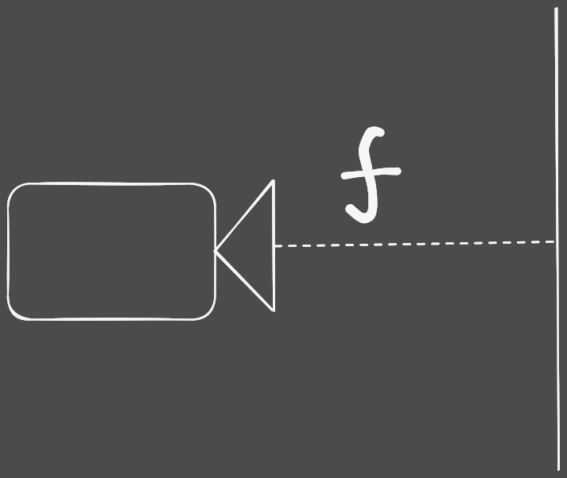
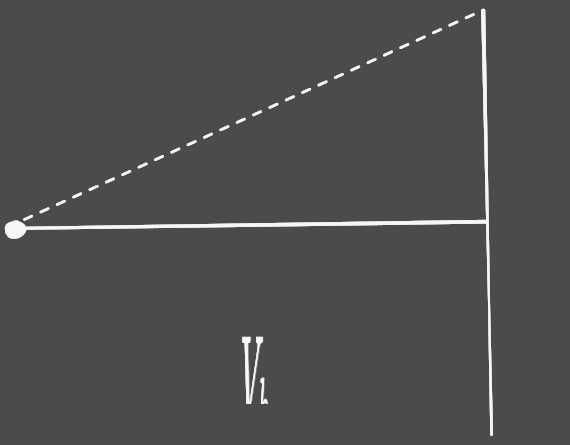
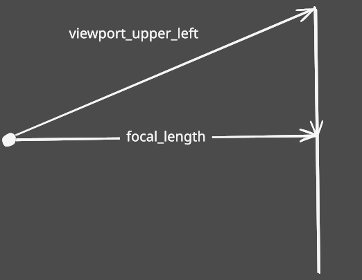
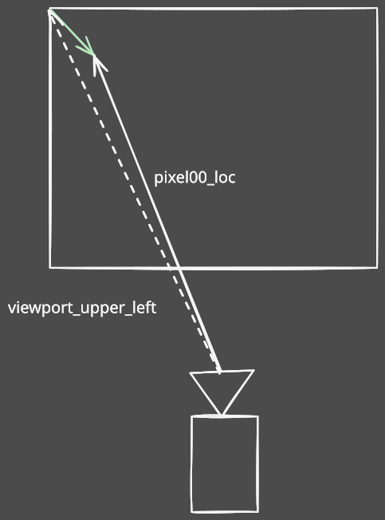
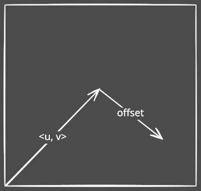
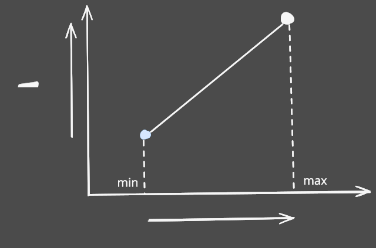
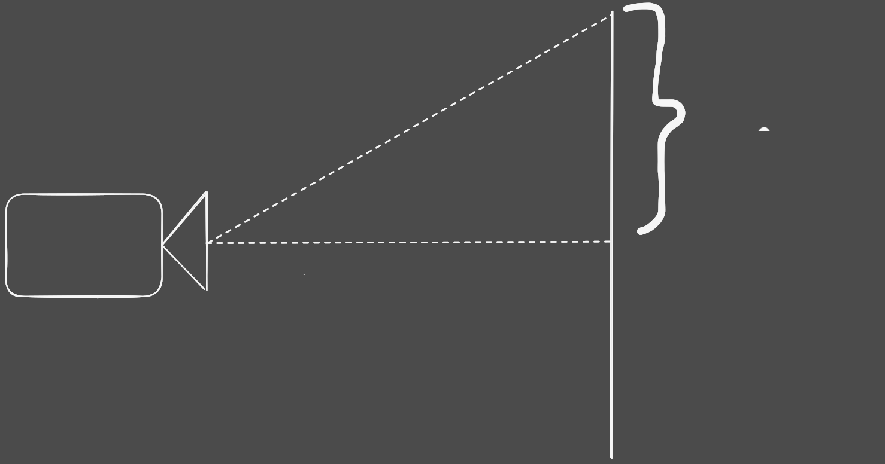

Camera
void initialize()
The f_focal_length variable controls the distance of camera from the object of focus.
Here \(f\) is the focal_length.
We control the aspect ratio and image_width manually.
{kind=link}
The value of focal_length and dimensions of viewport don't hold much value as long as they are both scaled equally.
In the following figure, \(\frac {V_h} 2\) is the viewport_height and \(S\) is any random scalar value.
{kind=link}
The following variables u_pixel_delta_u and u_pixel_delta_v are represented in the following figure, represented by
{kind=link}
The viewport_upper_left is given by
{kind=link}
Similarly, pixel00_loc is given by
{kind=link}
void render(const hittable&)
First, we call the camera::initialize().
initialize();
resize the grid
pixel_grid.resize(img_height * img_width);
Then, we will iterate over our 1 dimensional pixel_grid.
for (auto& pixel : pixel_grid) {}
We will also need keep track of each iteration using an index.
int index = 1;
For the \(x\) coordinate of each pixel, we do
int x = (index - 1) % img_width;
{kind=link}
in the figure above, the image_width is \(3\).
Similarly for \(y\) coordinate, we do
int y = (index - 1) / img_width;
then for anti-aliasing, we iterate over each sample and get the overall color.1
for (int sample = 0; sample < samples_per_pixel; sample++) {
ray r = get_ray(x, y);
pixel_color += ray_color(r, max_depth, world);
}
Then in the end, we write the color
write_color(&pixel, pixel_color * pixel_samples_scale);
then we show the image
this->show();
void camera::render(const hittable& world) {
initialize();
pixel_grid.resize(img_height * img_width);
int index = 1;
for (auto& pixel : pixel_grid) {
color pixel_color(0, 0, 0);
int x = (index - 1) % img_width;
int y = (index - 1) / img_width;
for (int sample = 0; sample < samples_per_pixel; sample++) {
ray r = get_ray(x, y);
pixel_color += ray_color(r, max_depth, world);
}
write_color(&pixel, pixel_color * pixel_samples_scale);
index++;
}
this->show_img();
}
vec3 sample_square()
Get's a random vector1 in a square space with dimensions
With width and height both ranging in \([-0.5, 0.5]\).
vec3 camera::sample_square() const {
return vec3(random_double() - 0.5, random_double() - 0.5, 0);
}
ray get_ray(int, int)

We will need pixel00_loc are reference point.
{kind=link}
ray camera::get_ray(int u, int v) const {
auto offset = sample_square();
auto pixel_sample = pixel00_loc
+ ((u + offset.x()) * pixel_delta_u)
+ ((v + offset.y()) * pixel_delta_v);
auto ray_origin = center;
auto ray_direction = pixel_sample - ray_origin;
return ray(ray_origin, ray_direction);
}
color ray_color(const ray&, int, const hittable&)
So our task is to smoothly transform each color1 component into the component of the other color,1 depending on some variable.
For our purpose, we can use the \(y\) component of the ray2 to play that role since it changes according to height.
We need an equation for that line3
{kind=link}
We know that \(y_1\) and \(y_2\) are the component values of blue and white respectively and let's label them as \(B\) and \(W\).
Also, we want \(x_1\) and \(x_2\) to be \(0\) and \(1\) for simplicity.
Then the equation becomes.
This function4 returns the pixel color for each ray2 for the sky.
vec3 unit_direction = unit_vector(r.direction());
There is a slight problem though 

The \(y\) component of the unit vector5 is in \([-1, 1]\) so we need to modify some of our maths for it.
So the interval6 we are working with is \([-1, 1]\) and we want it to be \([0, 1]\)
First thing to realize is that if we add \(1\) to our input, the interval6 becomes
{kind=link}
unit_direction.y() + 1.0f;
then dividing by \(2\), it is within \([0, 1]\)
auto a = 0.5*(unit_direction.y() + 1.0);
Let's take a look at our equation again
The way we will be sending the rays3 is going to be opposite to the direction of \(y\) component of unit vector.5
Since the direction is opposite, so the \(W\) is replaced by \(B\) and vise versa.
And this applies over all components of the color1
(1.0-a)*color(1.0, 1.0, 1.0) + a*color(0.5, 0.7, 1.0);
There can be multiple bounces, therefore, we will recursively call this function4 and limit the number of such bounces using a depth value.
if (depth <= 0)
return color(0, 0, 0);
We will look for collisions within
world.hit(r, interval(0.001, infinity), rec)
For each light bounce, we will calculate the scattered ray2 direction.
rec.mat->scatter(r, rec, attenuation, scattered)
Also, we will decrease the luminance by attenuation value.
attenuation * ray_color(scattered), depth - 1, world);
if (world.hit(r, interval(0.001, infinity), rec)) {
ray scattered;
color attenuation;
if (rec.mat->scatter(r, rec, attenuation, scattered))
return attenuation * ray_color(scattered, depth-1, world);
return color(0,0,0);
}
color camera::ray_color(const ray& r, int depth, const hittable& world) const {
if (depth <= 0)
return color(0, 0, 0);
hit_record rec;
if (world.hit(r, interval(0.001, infinity), rec)) {
ray scattered;
color attenuation;
if (rec.mat->scatter(r, rec, attenuation, scattered))
return attenuation * ray_color(scattered, depth-1, world);
return color(0,0,0);
}
vec3 unit_direction = unit_vector(r.direction());
auto a = 0.5*(unit_direction.y() + 1.0);
return (1.0-a)*color(1.0, 1.0, 1.0) + a*color(0.5, 0.7, 1.0);
}